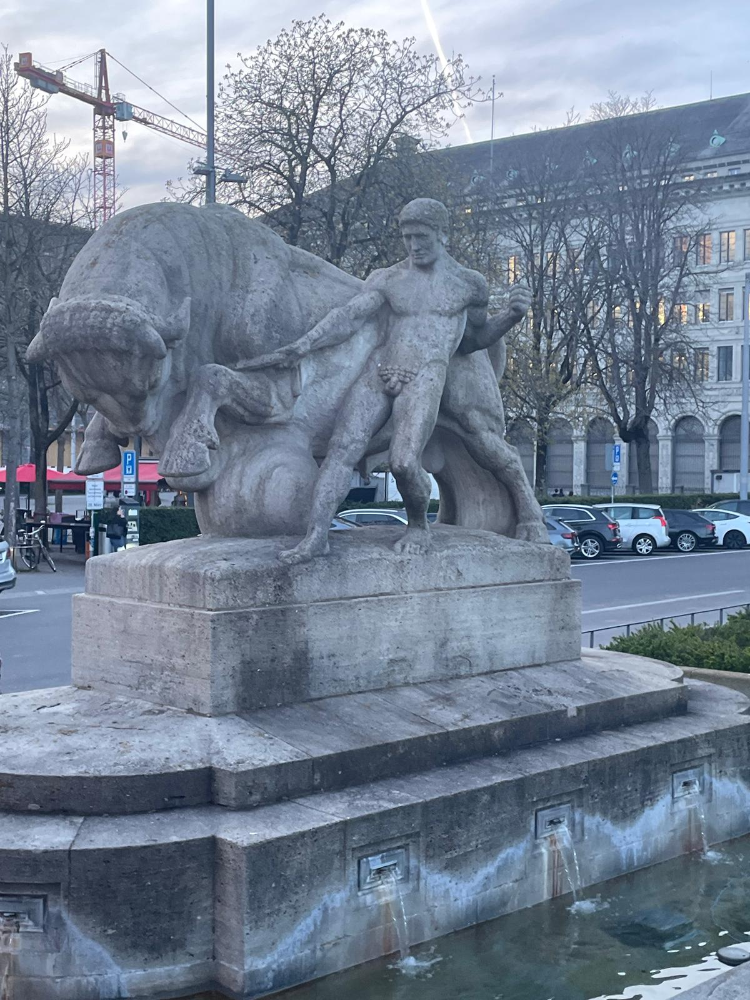
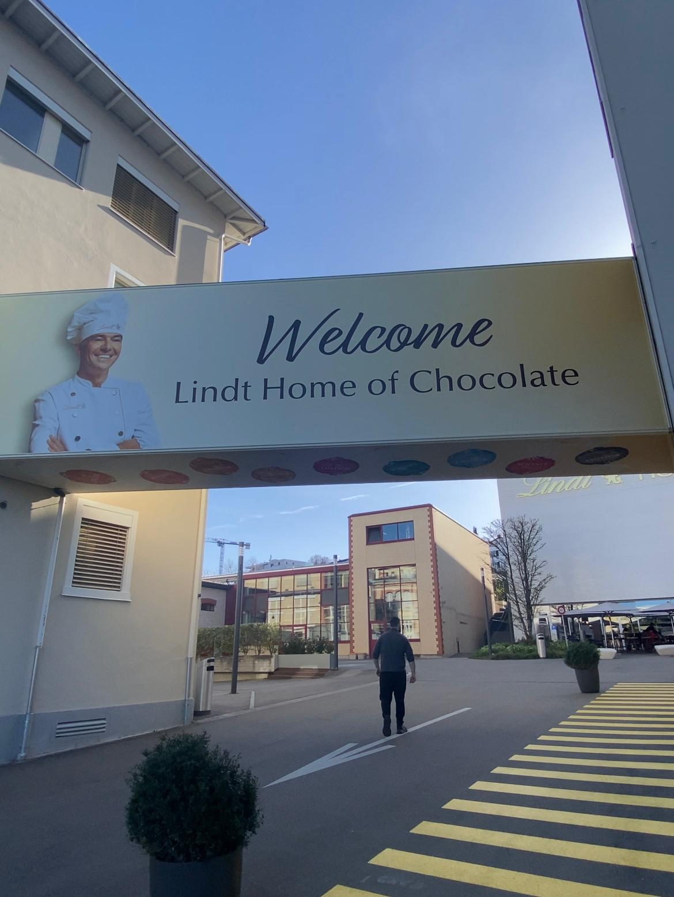
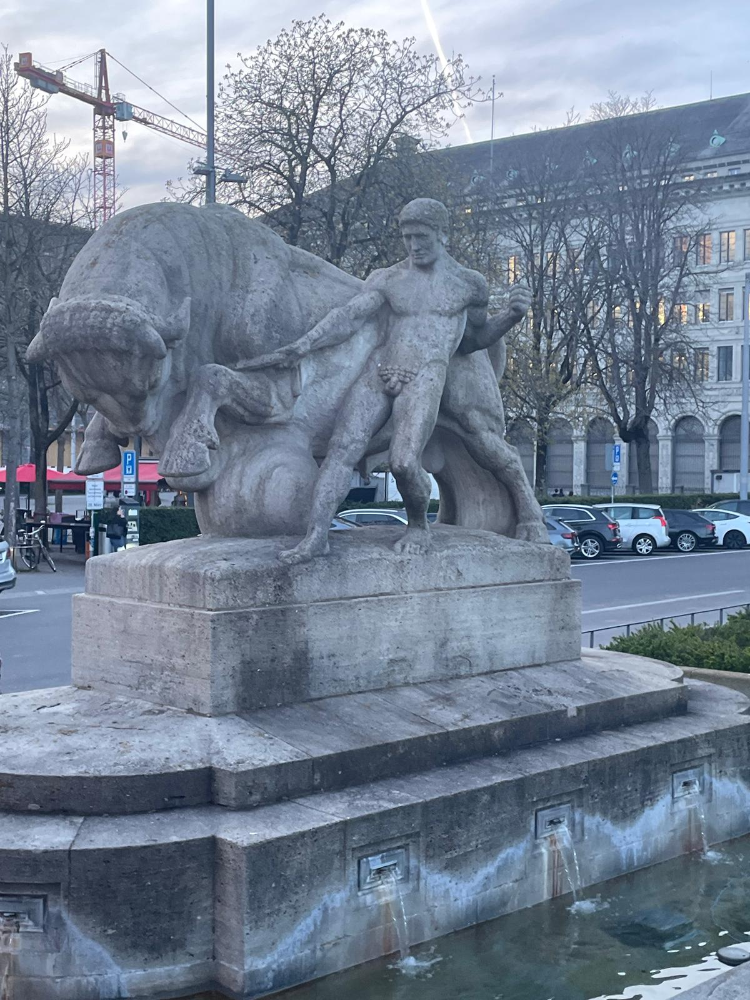
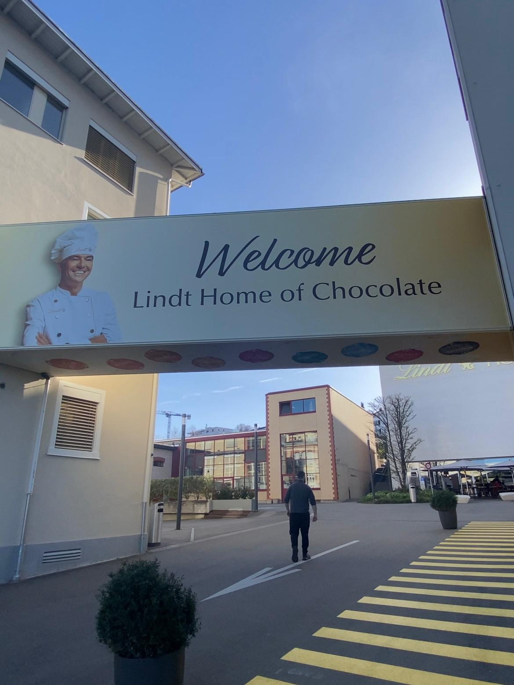
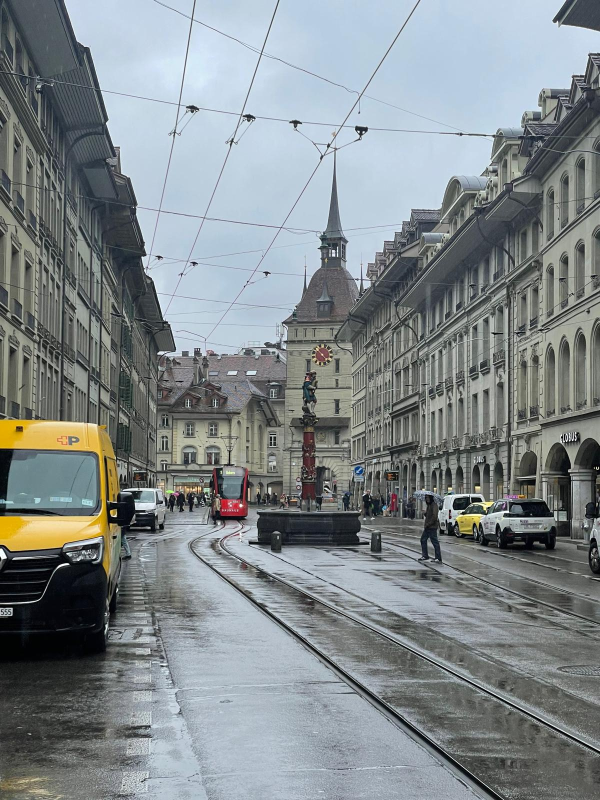
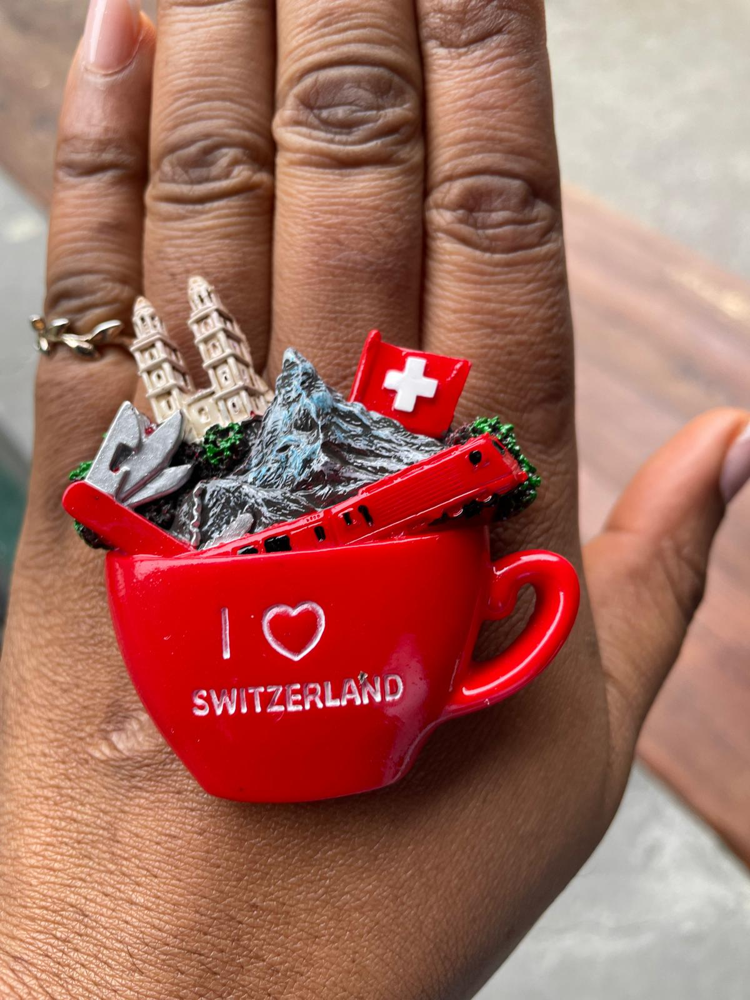
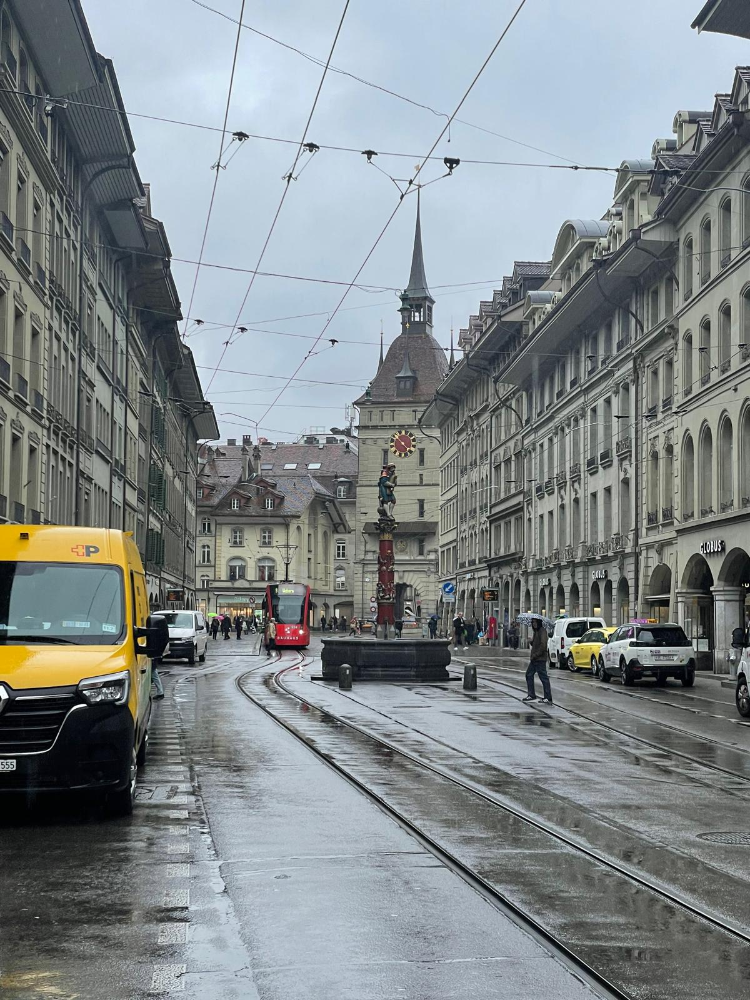
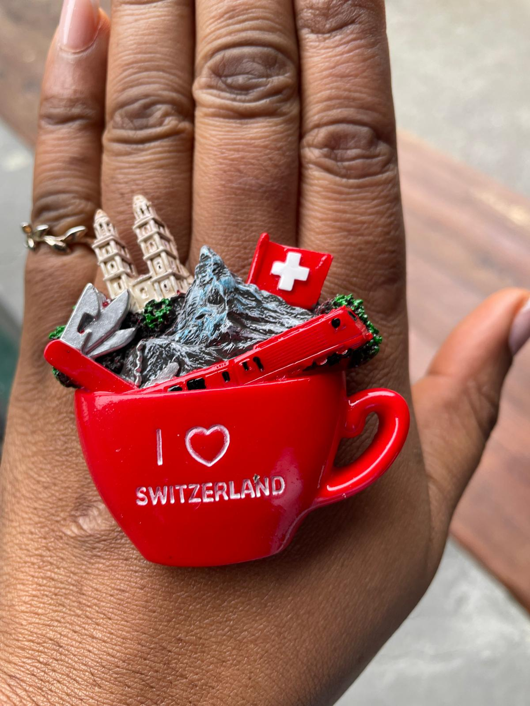

BLOG POSTS
Berlin, Germany
Checkpoint Charlie - in Berlin, an iconic representation of the division between East and West Berlin, symbolizing the ideaological and ...
Read more »Leipzig, Germany
Checkpoint Charlie - in Berlin, an iconic representation of the division between East and West Berlin, symbolizing the ideaological and ...
Read more »Düsseldorf, Germany
Checkpoint Charlie - in Berlin, an iconic representation of the division between East and West Berlin, symbolizing the ideaological and ...
Read more »Budapest, Hungary
Budapest, the capital of Hungary, rich in history with stunning architecture, and vibrant culture. One of its most iconic landmarks is the Hungarian..
Read more »Gdańsk, Poland
Gdańsk, with the largest port of the baltic region, is one of Poland’s most beautiful and historically rich cities. Known for its maritime...
Read more »London, United Kingdom
London, a vibrant metropolis known for its deep historical roots, modern landmarks, and cultural diversity. Although it’s not traditionally known...
Read more »Copenhagen, Denmark
The charming capital of Denmark, is a city built around water. Its scenic canals, harbors, and coastal location make it one of the most liveable...
Read more »Oslo, Norway
Oslo, a stunning blend of modern urban living and rich history, surrounded by nature. One of its most iconic landmarks is the Oslo Opera House...
Read more »Venice, Italy
Venice, "the floating city", is one of the most iconic destinations in the world, renowned for its intricate network of canals, stunning architecture...
Read more » 



Zurich, Switzerland
Switzerland’s largest city and one of Europe’s major financial and cultural hubs. Nestled by Lake Zurich and surrounded by the Alps...
Read more » 



Bern, Switzerland
Set along the Aare River and surrounded by hills, Bern offers a unique mix of history, culture, and natural beauty...
Read more »Tallinn, Estonia
Tallinn, city where medieval charm intertwines with modern vibrancy. Its rich history is reflected in its well-preserved architecture...
Read more »Helsinki, Finland
The capital of Finland, is renowned for its rich history, architectural beauty, and vibrant cultural scenes which collectively narrate Helsinki's...
Read more »Tiranë, Albania
Tiranë, a city that's vibrant, colorful, and full of history. It has evolved rapidly over the past few decades, transforming from a grey communist..
Read more »
Sarandë, Albania
Sarandë, Albania, is a captivating coastal city nestled along the Ionian Sea, offering a harmonious blend of ancient history, cultural heritage, and natural...
Read more »Corfu, Greece
Corfu (Kerkyra), one of Greece’s most enchanting islands, is located in the Ionian Sea near the northwest coast of the country. With its Venetian charm...
Read more »Kotor, Montenegro
Kotor's blend of historical landmarks, natural beauty, and cultural heritage makes it a must-visit destination for travelers seeking a rich and immersive..
Read more »Ksamil, Albania
Ksamil, Albania — often described as the “Ionian gem of the Balkans” — is a small coastal town in southern Albania, near the Greek border. Though quaint in size...
Read more »Dubrovnik, Croatia
Dubrovnik, often called the "Pearl of the Adriatic," is a breathtaking city on Croatia's southern coast, known for its stunning medieval architecture and vibrant...
Read more »